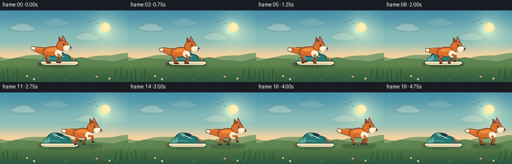
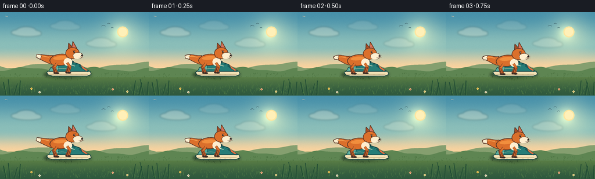
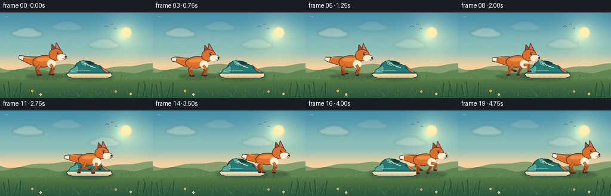

CODING AGENTS AS PIXEL WORLD MODELS
traex/DeepSeek-V4.1-Flash · dynamic_spatial_relationship_0027
点击播放 · 原生 RGB 像素
逐轮保存的候选
回放视频、检查图与代码变化。
每份候选均可单独播放。实际图片检查记录在下方工具轨迹中。
候选 01播放与检查图
点击播放 · 原生 RGB 像素


展开代码变化
--- 上一保存版本
+++ 本次保存版本
@@ -0,0 +1,522 @@
+from pathlib import Path
+import math
+
+import numpy as np
+from PIL import Image, ImageDraw, ImageFilter
+
+import artifact_io
+
+
+W, H = 256, 144
+N, FPS = 20, 4.0
+S = 4
+SW, SH = W * S, H * S
+
+CASE_DIR = Path(__file__).resolve().parent
+
+
+def sc(value):
+ return int(round(value * S))
+
+
+def mix(a, b, amount):
+ return tuple(int(round(a[i] * (1.0 - amount) + b[i] * amount)) for i in range(3))
+
+
+def smoothstep(value):
+ value = max(0.0, min(1.0, value))
+ return value * value * (3.0 - 2.0 * value)
+
+
+def smootherstep(value):
+ value = max(0.0, min(1.0, value))
+ return value * value * value * (value * (value * 6.0 - 15.0) + 10.0)
+
+
+def ellipse_points(cx, cy, rx, ry, rotation=0.0, count=64):
+ cos_r, sin_r = math.cos(rotation), math.sin(rotation)
+ points = []
+ for index in range(count):
+ theta = 2.0 * math.pi * index / count
+ x, y = rx * math.cos(theta), ry * math.sin(theta)
+ points.append((cx + x * cos_r - y * sin_r, cy + x * sin_r + y * cos_r))
+ return points
+
+
+def draw_ellipse(draw, cx, cy, rx, ry, fill, outline=None, width=1.0, rotation=0.0):
+ points = [(sc(x), sc(y)) for x, y in ellipse_points(cx, cy, rx, ry, rotation)]
+ draw.polygon(points, fill=fill)
+ if outline is not None:
+ draw.line(points + [points[0]], fill=outline, width=max(1, sc(width)), joint="curve")
+
+
+def draw_poly(draw, points, fill, outline=None, width=1.0):
+ scaled = [(sc(x), sc(y)) for x, y in points]
+ draw.polygon(scaled, fill=fill)
+ if outline is not None:
+ draw.line(scaled + [scaled[0]], fill=outline, width=max(1, sc(width)), joint="curve")
+
+
+def draw_capsule(draw, start, end, radius, fill):
+ x1, y1 = sc(start[0]), sc(start[1])
+ x2, y2 = sc(end[0]), sc(end[1])
+ r = max(1, sc(radius))
+ draw.line((x1, y1, x2, y2), fill=fill, width=r * 2)
+ draw.ellipse((x1 - r, y1 - r, x1 + r, y1 + r), fill=fill)
+ draw.ellipse((x2 - r, y2 - r, x2 + r, y2 + r), fill=fill)
+
+
+def bezier_points(p0, p1, p2, p3, count=30):
+ result = []
+ for index in range(count):
+ t = index / (count - 1)
+ u = 1.0 - t
+ x = u**3 * p0[0] + 3 * u**2 * t * p1[0] + 3 * u * t**2 * p2[0] + t**3 * p3[0]
+ y = u**3 * p0[1] + 3 * u**2 * t * p1[1] + 3 * u * t**2 * p2[1] + t**3 * p3[1]
+ result.append((x, y))
+ return result
+
+
+def ribbon_points(points, start_radius, end_radius):
+ left, right = [], []
+ for index, (x, y) in enumerate(points):
+ if index == 0:
+ dx, dy = points[1][0] - x, points[1][1] - y
+ elif index == len(points) - 1:
+ dx, dy = x - points[index - 1][0], y - points[index - 1][1]
+ else:
+ dx = points[index + 1][0] - points[index - 1][0]
+ dy = points[index + 1][1] - points[index - 1][1]
+ length = max(0.001, math.hypot(dx, dy))
+ nx, ny = -dy / length, dx / length
+ radius = start_radius + (end_radius - start_radius) * index / (len(points) - 1)
+ left.append((x + nx * radius, y + ny * radius))
+ right.append((x - nx * radius, y - ny * radius))
+ return left + list(reversed(right))
+
+
+def radial_glow(base, center, radius, color, strength):
+ yy, xx = np.mgrid[0:SH, 0:SW]
+ distance = np.sqrt((xx - center[0] * S) ** 2 + (yy - center[1] * S) ** 2)
+ glow = np.clip(np.exp(-((distance / (radius * S)) ** 2)), 0.0, 1.0) * strength
+ base[:] = np.clip(base + glow[:, :, None] * np.asarray(color, dtype=np.float32), 0, 255)
+
+
+def make_background():
+ y = np.linspace(0.0, H - 1.0, SH, dtype=np.float32)[:, None, None]
+ image = np.zeros((SH, SW, 3), dtype=np.float32)
+ top = np.asarray((72, 145, 170), dtype=np.float32)
+ middle = np.asarray((139, 190, 185), dtype=np.float32)
+ horizon = np.asarray((249, 211, 159), dtype=np.float32)
+ meadow = np.asarray((103, 137, 72), dtype=np.float32)
+ meadow_deep = np.asarray((47, 89, 62), dtype=np.float32)
+
+ sky_upper = np.clip(y / 58.0, 0, 1)
+ sky_lower = np.clip((y - 58.0) / 38.0, 0, 1)
+ sky_upper = sky_upper * sky_upper * (3 - 2 * sky_upper)
+ sky_lower = sky_lower * sky_lower * (3 - 2 * sky_lower)
+ image[:] = top
+ image = image * (1 - sky_upper) + middle * sky_upper
+ image = image * (1 - sky_lower) + horizon * sky_lower
+
+ ground = np.clip((y - 96.0) / 48.0, 0, 1)
+ ground = ground * ground * (3 - 2 * ground)
+ ground_color = meadow[None, None, :] * (1 - ground) + meadow_deep[None, None, :] * ground
+ mask = y >= 96
+ image = np.where(mask, ground_color, image)
+
+ radial_glow(image, (211, 34), 33, (54, 34, 11), 1.0)
+ radial_glow(image, (206, 35), 13, (72, 58, 25), 0.75)
+
+ rng = np.random.default_rng(2704)
+ grain = rng.normal(0.0, 2.1, (SH, SW, 1))
+ image = np.clip(image + grain, 0, 255).astype(np.uint8)
+ return Image.fromarray(image, "RGB").convert("RGBA")
+
+
+def draw_clouds(image, t):
+ layer = Image.new("RGBA", image.size, (0, 0, 0, 0))
+ draw = ImageDraw.Draw(layer)
+ drift = t * 3.0
+ clouds = [
+ (45 + drift, 34, 0.92),
+ (174 + drift * 0.55, 53, 0.66),
+ (112 - drift * 0.25, 23, 0.42),
+ ]
+ for cx, cy, alpha_scale in clouds:
+ color = (255, 244, 219, int(72 * alpha_scale))
+ for ox, oy, rx, ry in [
+ (-12, 1, 14, 5),
+ (0, -2, 17, 7),
+ (13, 2, 13, 5),
+ (3, 4, 23, 4),
+ ]:
+ draw.ellipse(
+ (sc(cx + ox - rx), sc(cy + oy - ry), sc(cx + ox + rx), sc(cy + oy + ry)),
+ fill=color,
+ )
+ layer = layer.filter(ImageFilter.GaussianBlur(sc(1.4)))
+ image.alpha_composite(layer)
+
+
+def draw_hills(image):
+ draw = ImageDraw.Draw(image)
+ far = [(0, 101)]
+ for x in range(0, W + 4, 4):
+ y = 91.0 + 4.3 * math.sin(x / 23.0 + 0.5) + 2.0 * math.sin(x / 11.0)
+ far.append((x, y))
+ far.extend([(W, 104), (0, 104)])
+ draw_poly(draw, far, (133, 159, 111, 255))
+
+ mid = [(0, 106)]
+ for x in range(0, W + 4, 4):
+ y = 98.5 + 3.2 * math.sin(x / 18.0 + 2.2) + 1.1 * math.sin(x / 7.0 + 0.3)
+ mid.append((x, y))
+ mid.extend([(W, 112), (0, 112)])
+ draw_poly(draw, mid, (94, 133, 82, 255))
+
+ rng = np.random.default_rng(771)
+ for _ in range(420):
+ x = float(rng.uniform(0, W))
+ y = float(rng.uniform(101, 142))
+ if y < 106:
+ continue
+ depth = (y - 102) / 42.0
+ color = (
+ int(67 + 21 * depth),
+ int(105 + 27 * depth),
+ int(57 + 17 * depth),
+ int(42 + 38 * depth),
+ )
+ length = float(rng.uniform(1.0, 3.2)) * (0.7 + depth)
+ lean = float(rng.uniform(-1.0, 1.0))
+ draw.line(
+ (sc(x), sc(y), sc(x + lean), sc(y - length)),
+ fill=color,
+ width=max(1, sc(0.55)),
+ )
+
+
+def draw_sun_and_birds(image, t):
+ draw = ImageDraw.Draw(image)
+ draw_ellipse(draw, 211, 34, 9.5, 9.5, (255, 230, 160, 245))
+ draw_ellipse(draw, 211, 34, 7.4, 7.4, (255, 240, 184, 255))
+ bird_shift = t * 2.0
+ for x, y, size in [(178 + bird_shift, 24, 3.2), (187 + bird_shift, 20, 2.4), (193 + bird_shift, 27, 2.0)]:
+ draw.line(
+ [(sc(x - size), sc(y)), (sc(x), sc(y - size * 0.55)), (sc(x + size), sc(y))],
+ fill=(56, 91, 100, 175),
+ width=max(1, sc(0.65)),
+ joint="curve",
+ )
+
+
+def draw_shoe(image):
+ shadow = Image.new("RGBA", image.size, (0, 0, 0, 0))
+ sd = ImageDraw.Draw(shadow)
+ sd.ellipse((sc(76), sc(101), sc(158), sc(114)), fill=(26, 55, 42, 115))
+ sd.polygon([(sc(78), sc(108)), (sc(153), sc(108)), (sc(143), sc(113)), (sc(86), sc(113))], fill=(26, 55, 42, 65))
+ shadow = shadow.filter(ImageFilter.GaussianBlur(sc(2.2)))
+ image.alpha_composite(shadow)
+
+ draw = ImageDraw.Draw(image)
+ dark = (19, 66, 67, 255)
+ teal = (37, 124, 119, 255)
+ teal_light = (84, 169, 155, 255)
+ teal_deep = (26, 91, 91, 255)
+ sole = (244, 226, 182, 255)
+ sole_dark = (181, 155, 112, 255)
+ accent = (224, 112, 64, 255)
+
+ sole_shape = [(80, 104), (83, 108), (91, 110), (150, 110), (157, 107), (155, 102), (85, 101)]
+ draw_poly(draw, sole_shape, sole, dark, 1.0)
+ draw.line([(sc(84), sc(107)), (sc(151), sc(107))], fill=sole_dark, width=max(1, sc(0.8)))
+ for x in (94, 103, 112, 121, 130, 139):
+ draw.line((sc(x), sc(108), sc(x + 3), sc(108)), fill=(204, 181, 138, 255), width=max(1, sc(0.55)))
+
+ upper = [
+ (84, 102),
+ (87, 96),
+ (93, 93),
+ (97, 86),
+ (103, 82),
+ (110, 81),
+ (115, 85),
+ (119, 87),
+ (128, 87),
+ (137, 90),
+ (145, 96),
+ (154, 102),
+ ]
+ draw_poly(draw, upper, teal, dark, 1.2)
+
+ heel = [(137, 90), (145, 96), (154, 102), (150, 103), (143, 99), (135, 93)]
+ draw_poly(draw, heel, teal_deep, None)
+ draw_poly(draw, [(139, 91), (145, 96), (151, 100), (148, 101), (142, 97)], accent, None)
+
+ toe_cap = [(84, 102), (87, 96), (93, 93), (98, 88), (101, 94), (99, 102)]
+ draw_poly(draw, toe_cap, teal_light, dark, 0.8)
+ draw.line([(sc(93), sc(96)), (sc(99), sc(101))], fill=(48, 136, 129, 255), width=max(1, sc(0.8)))
+
+ collar = [(108, 84), (113, 81), (120, 82), (127, 85), (124, 88), (116, 87), (111, 87)]
+ draw_poly(draw, collar, (21, 62, 65, 255), dark, 0.7)
+ tongue = [(103, 82), (109, 80), (115, 85), (114, 91), (106, 88)]
+ draw_poly(draw, tongue, teal_light, dark, 0.8)
+
+ for index in range(4):
+ x1 = 107 + index * 4.3
+ y1 = 84.5 + index * 2.0
+ draw.line(
+ (sc(x1), sc(y1), sc(x1 + 8.5), sc(y1 + 2.2)),
+ fill=(247, 232, 199, 255),
+ width=max(1, sc(0.9)),
+ )
+ for index in range(3):
+ x = 108 + index * 5.3
+ y = 85.5 + index * 2.3
+ draw.ellipse((sc(x - 0.8), sc(y - 0.8), sc(x + 0.8), sc(y + 0.8)), fill=(29, 84, 83, 255))
+
+ draw.line([(sc(89), sc(99)), (sc(106), sc(97)), (sc(120), sc(98))], fill=(234, 216, 171, 255), width=max(1, sc(0.8)))
+ draw.line([(sc(91), sc(101)), (sc(105), sc(100))], fill=(60, 143, 135, 255), width=max(1, sc(0.6)))
+ draw.line([(sc(117), sc(86)), (sc(133), sc(91))], fill=(16, 80, 81, 255), width=max(1, sc(0.7)))
+
+
+def transform_factory(root, angle):
+ cos_a, sin_a = math.cos(angle), math.sin(angle)
+
+ def transform(point):
+ x, y = point
+ return (root[0] + x * cos_a - y * sin_a, root[1] + x * sin_a + y * cos_a)
+
+ return transform
+
+
+def ellipse_local(transform, cx, cy, rx, ry, rotation, count=64):
+ return [transform(point) for point in ellipse_points(cx, cy, rx, ry, rotation, count)]
+
+
+def draw_fox(image, root, phase, run_amount, crouch, tail_time):
+ body_angle = -0.035 + 0.045 * run_amount
+ transform = transform_factory(root, body_angle)
+ draw = ImageDraw.Draw(image)
+
+ outline = (87, 51, 36, 255)
+ fur = (219, 111, 43, 255)
+ fur_light = (242, 146, 64, 255)
+ fur_far = (166, 78, 38, 255)
+ cream = (255, 238, 207, 255)
+ cream_shadow = (229, 201, 169, 255)
+ paw = (52, 43, 39, 255)
+ pink = (207, 113, 101, 255)
+ eye = (31, 31, 34, 255)
+
+ def draw_leg(hip, foot, is_far, bend_side, width):
+ hx, hy = transform(hip)
+ fx, fy = transform(foot)
+ dx, dy = fx - hx, fy - hy
+ distance = max(0.001, math.hypot(dx, dy))
+ distance = min(distance, 19.2)
+ ux, uy = dx / max(0.001, math.hypot(dx, dy)), dy / max(0.001, math.hypot(dx, dy))
+ l1, l2 = 8.4, 10.4
+ a = (l1 * l1 - l2 * l2 + distance * distance) / (2.0 * distance)
+ h = math.sqrt(max(0.0, l1 * l1 - a * a))
+ px, py = -uy, ux
+ knee = (hx + ux * a + px * h * bend_side, hy + uy * a + py * h * bend_side)
+ ankle = (fx, fy)
+ color = fur_far if is_far else fur
+ shade = (108, 56, 35, 255) if is_far else (134, 65, 35, 255)
+ draw.line((sc(hx), sc(hy), sc(knee[0]), sc(knee[1]), sc(ankle[0]), sc(ankle[1])), fill=outline, width=max(1, sc(width + 1.2)), joint="curve")
+ draw.line((sc(hx), sc(hy), sc(knee[0]), sc(knee[1]), sc(ankle[0]), sc(ankle[1])), fill=color, width=max(1, sc(width)), joint="curve")
+ draw.line((sc(knee[0]), sc(knee[1]), sc(ankle[0]), sc(ankle[1])), fill=shade, width=max(1, sc(width * 0.45)), joint="curve")
+ paw_center = transform((foot[0] + (1.7 if foot[0] > 0 else 0.8), foot[1] + 0.5))
+ draw_ellipse(draw, paw_center[0], paw_center[1], 3.1 if not is_far else 2.8, 1.5, paw, outline, 0.4)
+
+ swing = 7.4 * run_amount
+ standing_feet = {
+ "back_far": (-12.5, 20.0),
+ "back_near": (-9.0, 20.4),
+ "front_far": (7.0, 20.0),
+ "front_near": (10.5, 20.4),
+ }
+ phase_offsets = {
+ "back_far": math.pi,
+ "back_near": 0.0,
+ "front_far": 0.0,
+ "front_near": math.pi,
+ }
+
+ def moving_foot(name):
+ base_x, base_y = standing_feet[name]
+ angle = phase + phase_offsets[name]
+ lift = max(0.0, math.sin(angle + 0.25))
+ moving = (base_x + swing * math.sin(angle), base_y - 6.2 * lift)
+ return (
+ base_x * (1.0 - run_amount) + moving[0] * run_amount,
+ base_y * (1.0 - run_amount) + moving[1] * run_amount,
+ )
+
+ draw_leg((-10.0, 3.0), moving_foot("back_far"), True, 1.0, 2.7)
+ draw_leg((8.0, 3.0), moving_foot("front_far"), True, -1.0, 2.7)
+
+ wave = math.sin(tail_time * 2.1) * (1.0 - 0.55 * run_amount)
+ base = transform((-15.0, -2.0))
+ c1 = transform((-25.0, -4.0 + 2.2 * wave))
+ c2 = transform((-35.0, -8.0 - 4.0 * wave + 4.0 * run_amount))
+ tip = transform((-43.0, -10.5 + 4.0 * wave + 4.5 * run_amount))
+ tail_curve = bezier_points(base, c1, c2, tip, 34)
+ tail_poly = ribbon_points(tail_curve, 7.8, 2.6)
+ draw_poly(draw, tail_poly, fur, outline, 1.1)
+ tip_curve = tail_curve[23:]
+ tip_poly = ribbon_points(tip_curve, 4.0, 2.4)
+ draw_poly(draw, tip_poly, cream, outline, 0.8)
+ highlight_curve = [transform((-22.0, -7.0)), transform((-30.0, -9.0)), transform((-37.0, -10.5 + 2.0 * wave))]
+ draw.line([(sc(x), sc(y)) for x, y in highlight_curve], fill=(245, 162, 82, 255), width=max(1, sc(1.2)), joint="curve")
+
+ body = ellipse_local(transform, -1.5, -2.0, 18.7, 9.7, -0.06)
+ draw_poly(draw, body, fur, outline, 1.15)
+ haunch = ellipse_local(transform, -10.0, -1.0, 9.0, 8.0, -0.1)
+ draw_poly(draw, haunch, fur, None)
+ chest = ellipse_local(transform, 10.7, 2.2, 7.2, 7.0, 0.15)
+ draw_poly(draw, chest, cream, None)
+ draw.line([(sc(8.5), sc(6.5)), (sc(13.0), sc(7.4))], fill=cream_shadow, width=max(1, sc(0.8)))
+ body_highlight = ellipse_local(transform, -2.5, -5.2, 11.8, 3.2, -0.05)
+ draw_poly(draw, body_highlight, (241, 142, 61, 105), None)
+
+ draw_leg((-8.0, 3.8), moving_foot("back_near"), False, 1.0, 3.4)
+ draw_leg((9.5, 3.7), moving_foot("front_near"), False, -1.0, 3.4)
+
+ far_ear = [transform((12.0, -19.0)), transform((13.0, -30.5)), transform((21.0, -21.0))]
+ draw_poly(draw, far_ear, fur_far, outline, 0.9)
+ near_ear = [transform((18.0, -20.0)), transform((20.5, -33.0)), transform((27.0, -20.5))]
+ draw_poly(draw, near_ear, fur, outline, 1.0)
+ draw_poly(
+ draw,
+ [transform((19.3, -22.3)), transform((20.8, -29.7)), transform((24.8, -21.8))],
+ pink,
+ None,
+ )
+
+ head = ellipse_local(transform, 19.0, -12.8, 11.5, 9.8, -0.05)
+ draw_poly(draw, head, fur, outline, 1.05)
+ cheek = [transform((22.0, -8.0)), transform((30.0, -5.5)), transform((27.0, -2.7)), transform((19.0, -5.0))]
+ draw_poly(draw, cheek, fur_light, None)
+ muzzle = ellipse_local(transform, 28.2, -8.2, 8.4, 5.4, 0.02)
+ draw_poly(draw, muzzle, cream, outline, 0.65)
+ lower_muzzle = ellipse_local(transform, 27.2, -5.6, 6.2, 3.0, 0.02)
+ draw_poly(draw, lower_muzzle, cream, None)
+
+ eye_center = transform((22.0, -14.9))
+ draw_ellipse(draw, eye_center[0], eye_center[1], 1.35, 1.55, eye, None)
+ glint = transform((22.45, -15.45))
+ draw_ellipse(draw, glint[0], glint[1], 0.38, 0.38, (255, 250, 224, 255), None)
+ brow_start, brow_end = transform((19.5, -17.0)), transform((24.7, -17.5))
+ draw.line((sc(brow_start[0]), sc(brow_start[1]), sc(brow_end[0]), sc(brow_end[1])), fill=outline, width=max(1, sc(0.65)))
+
+ nose = transform((35.3, -8.2))
+ draw_ellipse(draw, nose[0], nose[1], 1.55, 1.25, (35, 32, 33, 255), None)
+ mouth_a, mouth_b, mouth_c = transform((34.8, -7.2)), transform((32.8, -5.4)), transform((29.6, -5.1))
+ draw.line((sc(mouth_a[0]), sc(mouth_a[1]), sc(mouth_b[0]), sc(mouth_b[1]), sc(mouth_c[0]), sc(mouth_c[1])), fill=outline, width=max(1, sc(0.55)), joint="curve")
+
+ whisker_start = transform((32.0, -6.0))
+ for dy in (-1.0, 1.0):
+ end = transform((39.0, -7.0 + dy * 1.6))
+ draw.line((sc(whisker_start[0]), sc(whisker_start[1]), sc(end[0]), sc(end[1])), fill=(121, 82, 61, 150), width=max(1, sc(0.35)))
+
+
+def draw_dust(image, root_x, run_amount, phase):
+ if run_amount < 0.08:
+ return
+ layer = Image.new("RGBA", image.size, (0, 0, 0, 0))
+ draw = ImageDraw.Draw(layer)
+ for index in range(5):
+ offset = 17 + index * 5.2 + 1.4 * math.sin(phase * 0.5 + index)
+ x = root_x - offset
+ y = 106.0 - index * 1.2 + 1.0 * math.sin(phase + index * 1.7)
+ radius = 2.1 + index * 0.7
+ alpha = int(58 * run_amount * (1.0 - index / 5.5))
+ draw.ellipse(
+ (sc(x - radius), sc(y - radius * 0.65), sc(x + radius), sc(y + radius * 0.65)),
+ fill=(242, 218, 171, alpha),
+ )
+ layer = layer.filter(ImageFilter.GaussianBlur(sc(1.5)))
+ image.alpha_composite(layer)
+
+
+def draw_foreground(image, t):
+ draw = ImageDraw.Draw(image)
+ sway = math.sin(t * 2.0 * math.pi * 0.8)
+ blades = [
+ (10, 143, 6, 121, 1.6),
+ (17, 143, 14, 116, 1.3),
+ (24, 143, 30, 123, 1.0),
+ (33, 143, 35, 118, 1.4),
+ (229, 143, 233, 118, 1.2),
+ (239, 143, 244, 121, 1.5),
+ (247, 143, 241, 115, 1.1),
+ (253, 143, 255, 120, 1.3),
+ ]
+ for bx, by, tx, ty, width in blades:
+ tx += sway * (ty - by) * 0.05
+ draw.line((sc(bx), sc(by), sc(tx), sc(ty)), fill=(34, 77, 52, 255), width=max(1, sc(width)), joint="curve")
+ draw.line((sc(bx + 2), sc(by), sc(tx + 2.5), sc(ty + 2)), fill=(68, 113, 66, 255), width=max(1, sc(width * 0.55)), joint="curve")
+
+ flowers = [(54, 132, (245, 205, 91)), (68, 138, (246, 237, 207)), (194, 133, (241, 171, 129)), (219, 137, (247, 226, 149))]
+ for x, y, color in flowers:
+ draw.line((sc(x), sc(y + 1), sc(x), sc(y + 5)), fill=(56, 102, 59, 255), width=max(1, sc(0.55)))
+ for dx, dy in [(-1.0, 0), (1.0, 0), (0, -1.0), (0, 1.0)]:
+ draw.ellipse((sc(x + dx - 0.9), sc(y + dy - 0.9), sc(x + dx + 0.9), sc(y + dy + 0.9)), fill=color + (235,))
+ draw.ellipse((sc(x - 0.6), sc(y - 0.6), sc(x + 0.6), sc(y + 0.6)), fill=(154, 103, 47, 255))
+
+
+def fox_shadow(image, root_x, root_y, run_amount):
+ layer = Image.new("RGBA", image.size, (0, 0, 0, 0))
+ draw = ImageDraw.Draw(layer)
+ width = 31 + 5 * run_amount
+ draw.ellipse((sc(root_x - width), sc(103.2), sc(root_x + width), sc(112.3)), fill=(22, 47, 37, 95))
+ draw.ellipse((sc(root_x - width * 0.72), sc(105.0), sc(root_x + width * 0.8), sc(110.5)), fill=(22, 47, 37, 65))
+ layer = layer.filter(ImageFilter.GaussianBlur(sc(2.0)))
+ image.alpha_composite(layer)
+
+
+def render_frame(index, background):
+ t = index / (N - 1)
+ image = background.copy()
+ draw_clouds(image, t)
+ draw_sun_and_birds(image, t)
+
+ anticipation = 0.0
+ if 0.08 <= t <= 0.22:
+ anticipation = math.sin(math.pi * (t - 0.08) / 0.14)
+
+ if t <= 0.20:
+ travel = 0.0
+ elif t >= 0.88:
+ travel = 1.0
+ else:
+ travel = smootherstep((t - 0.20) / 0.68)
+
+ root_x = 106.0 + 100.0 * travel
+ run_amount = smoothstep((t - 0.18) / 0.08) * (1.0 - smoothstep((t - 0.81) / 0.11))
+ phase = (root_x - 106.0) * 0.185
+ root_y = 84.0 + 1.35 * math.sin(phase * 2.0) * run_amount + 1.7 * anticipation
+ tail_time = t * 2.0 * math.pi + phase * 0.18
+
+ draw_dust(image, root_x, run_amount, phase)
+ fox_shadow(image, root_x, root_y, run_amount)
+ draw_shoe(image)
+ draw_fox(image, (root_x, root_y), phase, run_amount, anticipation, tail_time)
+ draw_foreground(image, t)
+
+ image = image.convert("RGB").resize((W, H), Image.Resampling.LANCZOS)
+ return np.asarray(image, dtype=np.uint8)
+
+
+def main():
+ background = make_background()
+ draw_hills(background)
+ frames = np.stack([render_frame(index, background) for index in range(N)], axis=0)
+ artifact_io.save(frames, CASE_DIR)
+
+
+if __name__ == "__main__":
+ main()
候选 02播放与检查图
点击播放 · 原生 RGB 像素
展开代码变化
--- 上一保存版本
+++ 本次保存版本
@@ -211,11 +211,15 @@
)
-def draw_shoe(image):
+def draw_shoe(image, origin_x=0.0):
+ shift = lambda x: x + origin_x
shadow = Image.new("RGBA", image.size, (0, 0, 0, 0))
sd = ImageDraw.Draw(shadow)
- sd.ellipse((sc(76), sc(101), sc(158), sc(114)), fill=(26, 55, 42, 115))
- sd.polygon([(sc(78), sc(108)), (sc(153), sc(108)), (sc(143), sc(113)), (sc(86), sc(113))], fill=(26, 55, 42, 65))
+ sd.ellipse((sc(shift(76)), sc(101), sc(shift(158)), sc(114)), fill=(26, 55, 42, 115))
+ sd.polygon(
+ [(sc(shift(78)), sc(108)), (sc(shift(153)), sc(108)), (sc(shift(143)), sc(113)), (sc(shift(86)), sc(113))],
+ fill=(26, 55, 42, 65),
+ )
shadow = shadow.filter(ImageFilter.GaussianBlur(sc(2.2)))
image.alpha_composite(shadow)
@@ -228,43 +232,43 @@
sole_dark = (181, 155, 112, 255)
accent = (224, 112, 64, 255)
- sole_shape = [(80, 104), (83, 108), (91, 110), (150, 110), (157, 107), (155, 102), (85, 101)]
+ sole_shape = [(shift(80), 104), (shift(83), 108), (shift(91), 110), (shift(150), 110), (shift(157), 107), (shift(155), 102), (shift(85), 101)]
draw_poly(draw, sole_shape, sole, dark, 1.0)
- draw.line([(sc(84), sc(107)), (sc(151), sc(107))], fill=sole_dark, width=max(1, sc(0.8)))
+ draw.line([(sc(shift(84)), sc(107)), (sc(shift(151)), sc(107))], fill=sole_dark, width=max(1, sc(0.8)))
for x in (94, 103, 112, 121, 130, 139):
- draw.line((sc(x), sc(108), sc(x + 3), sc(108)), fill=(204, 181, 138, 255), width=max(1, sc(0.55)))
+ draw.line((sc(shift(x)), sc(108), sc(shift(x + 3)), sc(108)), fill=(204, 181, 138, 255), width=max(1, sc(0.55)))
upper = [
- (84, 102),
- (87, 96),
- (93, 93),
- (97, 86),
- (103, 82),
- (110, 81),
- (115, 85),
- (119, 87),
- (128, 87),
- (137, 90),
- (145, 96),
- (154, 102),
+ (shift(84), 102),
+ (shift(87), 96),
+ (shift(93), 93),
+ (shift(97), 86),
+ (shift(103), 82),
+ (shift(110), 81),
+ (shift(115), 85),
+ (shift(119), 87),
+ (shift(128), 87),
+ (shift(137), 90),
+ (shift(145), 96),
+ (shift(154), 102),
]
draw_poly(draw, upper, teal, dark, 1.2)
- heel = [(137, 90), (145, 96), (154, 102), (150, 103), (143, 99), (135, 93)]
+ heel = [(shift(137), 90), (shift(145), 96), (shift(154), 102), (shift(150), 103), (shift(143), 99), (shift(135), 93)]
draw_poly(draw, heel, teal_deep, None)
- draw_poly(draw, [(139, 91), (145, 96), (151, 100), (148, 101), (142, 97)], accent, None)
-
- toe_cap = [(84, 102), (87, 96), (93, 93), (98, 88), (101, 94), (99, 102)]
+ draw_poly(draw, [(shift(139), 91), (shift(145), 96), (shift(151), 100), (shift(148), 101), (shift(142), 97)], accent, None)
+
+ toe_cap = [(shift(84), 102), (shift(87), 96), (shift(93), 93), (shift(98), 88), (shift(101), 94), (shift(99), 102)]
draw_poly(draw, toe_cap, teal_light, dark, 0.8)
- draw.line([(sc(93), sc(96)), (sc(99), sc(101))], fill=(48, 136, 129, 255), width=max(1, sc(0.8)))
-
- collar = [(108, 84), (113, 81), (120, 82), (127, 85), (124, 88), (116, 87), (111, 87)]
+ draw.line([(sc(shift(93)), sc(96)), (sc(shift(99)), sc(101))], fill=(48, 136, 129, 255), width=max(1, sc(0.8)))
+
+ collar = [(shift(108), 84), (shift(113), 81), (shift(120), 82), (shift(127), 85), (shift(124), 88), (shift(116), 87), (shift(111), 87)]
draw_poly(draw, collar, (21, 62, 65, 255), dark, 0.7)
- tongue = [(103, 82), (109, 80), (115, 85), (114, 91), (106, 88)]
+ tongue = [(shift(103), 82), (shift(109), 80), (shift(115), 85), (shift(114), 91), (shift(106), 88)]
draw_poly(draw, tongue, teal_light, dark, 0.8)
for index in range(4):
- x1 = 107 + index * 4.3
+ x1 = shift(107 + index * 4.3)
y1 = 84.5 + index * 2.0
draw.line(
(sc(x1), sc(y1), sc(x1 + 8.5), sc(y1 + 2.2)),
@@ -272,13 +276,13 @@
width=max(1, sc(0.9)),
)
for index in range(3):
- x = 108 + index * 5.3
+ x = shift(108 + index * 5.3)
y = 85.5 + index * 2.3
draw.ellipse((sc(x - 0.8), sc(y - 0.8), sc(x + 0.8), sc(y + 0.8)), fill=(29, 84, 83, 255))
- draw.line([(sc(89), sc(99)), (sc(106), sc(97)), (sc(120), sc(98))], fill=(234, 216, 171, 255), width=max(1, sc(0.8)))
- draw.line([(sc(91), sc(101)), (sc(105), sc(100))], fill=(60, 143, 135, 255), width=max(1, sc(0.6)))
- draw.line([(sc(117), sc(86)), (sc(133), sc(91))], fill=(16, 80, 81, 255), width=max(1, sc(0.7)))
+ draw.line([(sc(shift(89)), sc(99)), (sc(shift(106)), sc(97)), (sc(shift(120)), sc(98))], fill=(234, 216, 171, 255), width=max(1, sc(0.8)))
+ draw.line([(sc(shift(91)), sc(101)), (sc(shift(105)), sc(100))], fill=(60, 143, 135, 255), width=max(1, sc(0.6)))
+ draw.line([(sc(shift(117)), sc(86)), (sc(shift(133)), sc(91))], fill=(16, 80, 81, 255), width=max(1, sc(0.7)))
def transform_factory(root, angle):
@@ -495,15 +499,15 @@
else:
travel = smootherstep((t - 0.20) / 0.68)
- root_x = 106.0 + 100.0 * travel
+ root_x = 75.0 + 126.0 * travel
run_amount = smoothstep((t - 0.18) / 0.08) * (1.0 - smoothstep((t - 0.81) / 0.11))
- phase = (root_x - 106.0) * 0.185
+ phase = (root_x - 75.0) * 0.185
root_y = 84.0 + 1.35 * math.sin(phase * 2.0) * run_amount + 1.7 * anticipation
tail_time = t * 2.0 * math.pi + phase * 0.18
draw_dust(image, root_x, run_amount, phase)
fox_shadow(image, root_x, root_y, run_amount)
- draw_shoe(image)
+ draw_shoe(image, 31.0)
draw_fox(image, (root_x, root_y), phase, run_amount, anticipation, tail_time)
draw_foreground(image, t)
候选 03播放与检查图

候选 04播放与检查图
点击播放 · 原生 RGB 像素

展开代码变化
--- 上一保存版本
+++ 本次保存版本
@@ -131,7 +131,7 @@
rng = np.random.default_rng(2704)
grain = rng.normal(0.0, 2.1, (SH, SW, 1))
image = np.clip(image + grain, 0, 255).astype(np.uint8)
- return Image.fromarray(image, "RGB").convert("RGBA")
+ return Image.fromarray(image).convert("RGBA")
def draw_clouds(image, t):
@@ -499,9 +499,9 @@
else:
travel = smootherstep((t - 0.20) / 0.68)
- root_x = 75.0 + 126.0 * travel
+ root_x = 78.0 + 135.0 * travel
run_amount = smoothstep((t - 0.18) / 0.08) * (1.0 - smoothstep((t - 0.81) / 0.11))
- phase = (root_x - 75.0) * 0.185
+ phase = (root_x - 78.0) * 0.185
root_y = 84.0 + 1.35 * math.sin(phase * 2.0) * run_amount + 1.7 * anticipation
tail_time = t * 2.0 * math.pi + phase * 0.18
候选 05播放与检查图
可观测工具轨迹
实际执行的命令与返回图片。
命令 1exit 0
/bin/bash -c "pwd && rg --files -g 'prompt.txt' -g 'GENERATION_RULES.md' -g 'task_spec.json' -g '"'!*.mp4'"' -g '"'!*.mov'"'"
命令 2exit 0
/bin/bash -c "find . -maxdepth 2 -type f -printf '%p %s bytes\\n' | sort | head -200"
命令 3exit 0
/bin/bash -c 'git status --short --branch'
命令 4exit 0
/bin/bash -c 'cat prompt.txt'
命令 5exit 0
/bin/bash -c 'cat GENERATION_RULES.md'
命令 6exit 0
/bin/bash -c 'cat task_spec.json'
命令 7exit 0
/bin/bash -c "sed -n '1,240p' artifact_io.py"
命令 8exit 0
/bin/bash -c 'python generate.py'
命令 9exit 0
/bin/bash -c 'file inspection.png transition_check.png pixels.npz index.html && identify inspection.png transition_check.png 2>/dev/null || true'
命令 10exit 0
/bin/bash -c 'command -v chafa || command -v viu || command -v jp2 || command -v img2txt || true'
命令 11exit 0
/bin/bash -c "python - <<'PY'
from PIL import Image
import numpy as np
for f in ['frames/00.png','frames/07.png','frames/12.png','frames/19.png']:
a=np.array(Image.open(f).convert('RGB'))
print(f, a.shape, 'mean', a.mean((0,1)).round(1), 'unique',len(np.unique(a.reshape(-1,3),axis=0)))
PY"命令 12exit 0
/bin/bash -c "python - <<'PY'
from PIL import Image
import numpy as np
for fn in ['frames/00.png','frames/03.png','frames/08.png','frames/12.png','frames/19.png']:
im=np.asarray(Image.open(fn).convert('RGB')).astype(int)
# downsample to 64x36 nearest
im=im[::4,::4]
print('\\n',fn)
for row in im:
s=''
for r,g,b in row:
if r>180 and 55<g<185 and b<110: ch='F' # orange fox
elif b>g*0.92 and g>75 and b>85 and r<110: ch='S' # teal shoe
elif r>170 and g>150 and b<140: ch='s' # shoe sole / sun
elif r>105 and g>95 and b<100: ch='T' # ground / tail? brown
elif g>r*1.2 and g>b*1.1: ch=',' # green ground
elif b>r and b>g*0.8: ch='.' # sky
else: ch=' '
s+=ch
print(s.rstrip())
PY"命令 13exit 0
/bin/bash -c "python - <<'PY'
from PIL import Image
im=Image.open('inspection.png')
print(im.size)
# report bboxes of representative salient colors in selected frames
import numpy as np
for fn in ['frames/00.png','frames/05.png','frames/10.png','frames/19.png']:
a=np.asarray(Image.open(fn).convert('RGB')).astype(int)
r,g,b=a.transpose(2,0,1)
fox=(r>170)&(g>55)&(g<180)&(b<115)&(r>g*1.4)
shoe=(b>g*.9)&(g>70)&(b>75)&(r<120)&(g>r*1.4)
def box(mask):
ys,xs=np.where(mask)
return None if len(xs)==0 else (xs.min(),ys.min(),xs.max(),ys.max(),len(xs))
print(fn,'fox',box(fox),'shoe',box(shoe))
PY"命令 14exit 0
/bin/bash -c "python - <<'PY'
from PIL import Image
im=Image.open('frames/00.png').convert('RGB')
im.resize((768,432),Image.Resampling.NEAREST).save('.tmp/frame00_3x.png')
im=Image.open('frames/10.png').convert('RGB')
im.resize((768,432),Image.Resampling.NEAREST).save('.tmp/frame10_3x.png')
im=Image.open('frames/19.png').convert('RGB')
im.resize((768,432),Image.Resampling.NEAREST).save('.tmp/frame19_3x.png')
PY"命令 15exit 0
/bin/bash -c "python - <<'PY'
from PIL import Image
import numpy as np, colorsys
for fn in ['frames/00.png','frames/10.png','frames/19.png']:
a=np.asarray(Image.open(fn).convert('RGB')).astype(float)/255
out=[]
for y in range(48,118,2):
row=''
for x in range(20,255,2):
r,g,b=a[y:y+2,x:x+2].mean((0,1)); h,s,v=colorsys.rgb_to_hsv(r,g,b)
if s>.42 and (h<.12 or h>.98) and v>.42: c='F' if v>.55 else 'f'
elif .39<h<.57 and s>.28 and v>.18 and y>82: c='S' if v>.36 else 's'
elif .17<h<.43 and s>.18 and y>86: c=',' if v<.52 else 'g'
elif .38<h<.66 and v>.45: c='.'
elif v<.35: c='#'
else: c=' '
row+=c
out.append(row.rstrip())
print('\\n',fn)
print('\\n'.join(out))
PY"命令 16exit 0
/bin/bash -c 'git status --short -- generate.py frames inspection.png transition_check.png pixels.npz index.html audio.wav 2>/dev/null || true'
命令 17exit 0
/bin/bash -c "sed -n '1,220p' generate.py"
命令 18exit 0
/bin/bash -c "sed -n '220,520p' generate.py"
命令 19exit 0
/bin/bash -c "sed -n '520,760p' generate.py"
命令 20exit 0
/bin/bash -c 'python generate.py'
命令 21exit 0
/bin/bash -c "python - <<'PY'
from PIL import Image
import numpy as np
for fn in ['frames/00.png','frames/04.png','frames/08.png','frames/12.png','frames/16.png','frames/19.png']:
a=np.asarray(Image.open(fn).convert('RGB')).astype(float)/255
out=[]
for y in range(50,116,2):
row=''
for x in range(8,255,2):
r,g,b=a[y:y+2,x:x+2].mean((0,1)); mx=max(r,g,b); mn=min(r,g,b); sat=(mx-mn)/max(mx,1e-6)
if sat>.4 and r>g*1.28 and r>b*1.55 and mx>.42: c='F'
elif g>r*1.35 and b>r*1.25 and g>65 and y>82: c='S'
elif g>r*1.12 and g>b*.96 and y>92: c=','
elif b>g*.86 and mx>.42: c='.'
elif mx<.30: c='#'
else: c=' '
row+=c
out.append(row.rstrip())
print('\\n',fn)
print('\\n'.join(out))
PY"命令 22exit 0
/bin/bash -c 'python generate.py'
命令 23exit 0
/bin/bash -c "python - <<'PY'
from pathlib import Path
import json, numpy as np
from PIL import Image
frames=sorted(Path('frames').glob('*.png'))
print('frame_count',len(frames))
print('size',Image.open(frames[0]).size,'mode',Image.open(frames[0]).mode)
print('pixels_npz',Path('pixels.npz').stat().st_size)
print('index_html',Path('index.html').stat().st_size)
print('inspection',Image.open('inspection.png').size)
print('transition',Image.open('transition_check.png').size)
for fn in ['frames/00.png','frames/19.png']:
a=np.asarray(Image.open(fn).convert('RGB')).astype(np.int16)
r,g,b=a[:,:,0],a[:,:,1],a[:,:,2]
fox=(r>155)&(r>g*1.35)&(r>b*1.7)&(g>40)
teal=(g>r*1.3)&(b>r*1.15)&(g>65)&(b>65)
def bbox(m):
y,x=np.where(m)
return (int(x.min()),int(y.min()),int(x.max()),int(y.max())) if len(x) else None
print(fn,'fox',bbox(fox),'teal',bbox(teal),'mean',a.mean((0,1)).round(1).tolist())
with np.load('pixels.npz') as z:
print('pixels',z['pixels'].shape,z['pixels'].dtype,int(z['pixels'].min()),int(z['pixels'].max()))
PY"命令 24exit 1
/bin/bash -c "python - <<'PY'
from pathlib import Path
import json, re, base64, numpy as np
html=Path('index.html').read_text()
m=re.search(r'const DATA = (\\{.*?\\});',html,re.S)
if not m:
m=re.search(r'(\\{\"id\":.*?\\});',html,re.S)
print('payload_match',bool(m))
if m:
d=json.loads(m.group(1))
print('meta',{k:d[k] for k in ('id','width','height','frames','fps','audio')})
print('deltas',len(d['deltas']),'first_bytes',len(base64.b64decode(d['first'])))
print('caption',d['caption'])
PY"命令 25exit 0
/bin/bash -c "sed -n '1,220p' player_template.html"
命令 26exit 0
/bin/bash -c "python - <<'PY'
from pathlib import Path
import json, re, base64
html=Path('index.html').read_text()
start=html.index('const DATA=')+len('const DATA=')
end=html.index(',W=DATA.width',start)
d=json.loads(html[start:end])
print('meta',{k:d[k] for k in ('id','width','height','frames','fps','audio')})
print('deltas',len(d['deltas']),'first_pixels',len(base64.b64decode(d['first']))//4)
print('caption',d['caption'])
PY"命令 27exit 0
/bin/bash -c "python -m py_compile generate.py artifact_io.py && python - <<'PY'
from pathlib import Path
from PIL import Image
import numpy as np
# Verify all frames differ, dimensions are exact, and the fox's orange mass shifts right.
imgs=[np.asarray(Image.open(p).convert('RGB')).astype(np.int16) for p in sorted(Path('frames').glob('*.png'))]
assert len(imgs)==20 and all(a.shape==(144,256,3) for a in imgs)
changes=[int(np.any(imgs[i]"'!=imgs[i-1],axis=2).sum()) for i in range(1,len(imgs))]
centers=[]
for a in imgs:
r,g,b=a[:,:,0],a[:,:,1],a[:,:,2]
m=(r>150)&(r>g*1.32)&(r>b*1.7)&(g>35)&(np.indices(r.shape)[1]>25)
y,x=np.where(m)
centers.append(float(x.mean()))
print('"'changed_pixels_min_max',min(changes),max(changes))
print('orange_centroid_first_last',round(centers[0],1),round(centers[-1],1))
print('files',len(list(Path('frames').glob('*.png'))),Path('pixels.npz').stat().st_size,Path('index.html').stat().st_size)
PY"保存候选 5 份；完成命令 27 次；可验证图片返回 0 张。原始 API 响应与完整日志保留在本地。